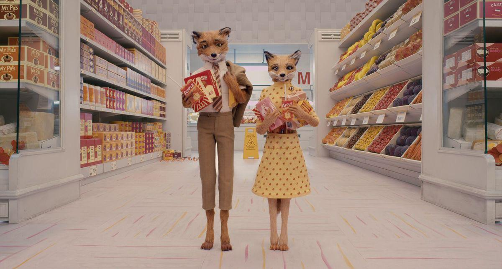

ESPACIO 05 / LA ABUNDANCIA
EL PARAÍSO
DE LOS ANTOJOS.
Pasillos, comida y oportunidades. Cada producto puede convertirse en un premio o en parte de un plan secreto.
ENTRAR AL SUPERMERCADO ↓
DENTRO DE LA HISTORIA
La comida impulsa muchas de las decisiones del señor Fox. El supermercado simboliza la abundancia y el acceso a recursos que los personajes desean conseguir.
El verdadero botín es tener suficiente para compartir.
Este espacio permite reflexionar sobre la diferencia entre tener recursos y poder acceder a ellos. La aventura convierte un lugar cotidiano en un escenario lleno de posibilidades y riesgos.
FIN DEL RECORRIDO ✳
Has llegado al quinto espacio. Puedes volver al inicio para explorar otra vez el universo de la película.